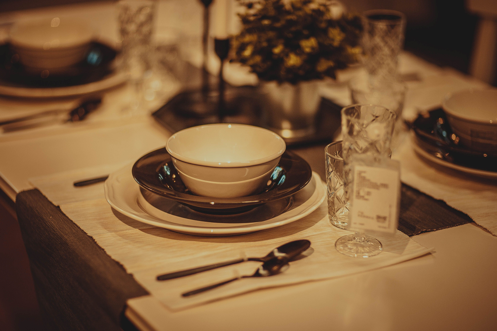
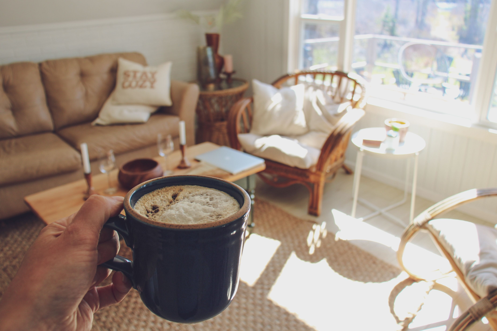
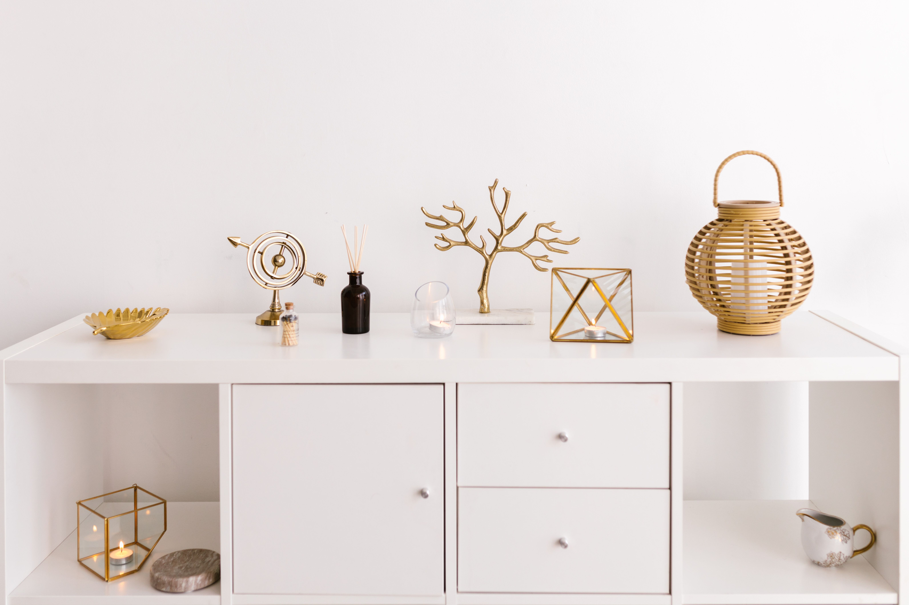
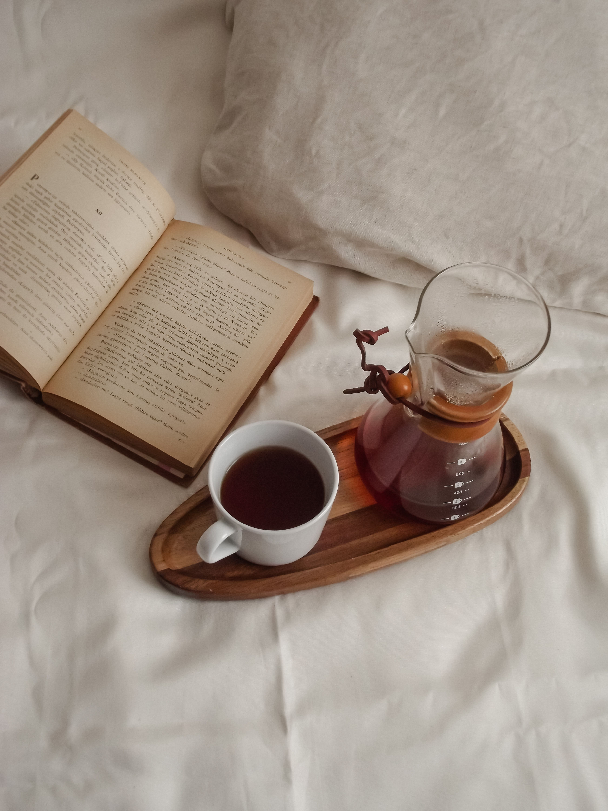

【溫度】把平凡的一餐，好好享用
器皿的存在，讓用餐成為一種生活儀式。
不需要特別的節日，也值得認真對待每一次用餐。選擇喜歡的餐盤與杯器，讓簡單的料理多一份溫度，讓忙碌的生活多一點從容。
試著調整搜尋關鍵字，或瀏覽其他生活提案。

從器物、香氣到生活習慣，每個選擇都在塑造理想日常。
讓書寫成為與自己對話的留白時刻。
在快速切換的資訊洪流裡，一本筆記本與一支順手的筆，能讓思緒慢慢沉澱。記錄靈感、整理想法，也收藏那些容易被忽略的日常片段。

器皿的存在，讓用餐成為一種生活儀式。
不需要特別的節日，也值得認真對待每一次用餐。選擇喜歡的餐盤與杯器，讓簡單的料理多一份溫度，讓忙碌的生活多一點從容。
尋找專屬你的回巢感，讓疲憊悄然消散。
木質調的沉穩、茶香的溫潤或草本植物的清新，都能悄悄改變空間氛圍。透過香氣的陪伴，讓家成為真正能放鬆身心的地方。

當視線變得乾淨，心也跟著安定下來。
收納不只是整理物品，更是一種整理生活的方式。透過簡約實用的小物，讓日常空間保有呼吸感，也讓生活多一些自在與餘裕。

每一天的開始，都值得被溫柔對待。
一杯熱茶、一段閱讀時光，或是簡單整理桌面，都是迎接新一天的方式。透過微小卻穩定的儀式感，慢慢建立屬於自己的生活節奏。